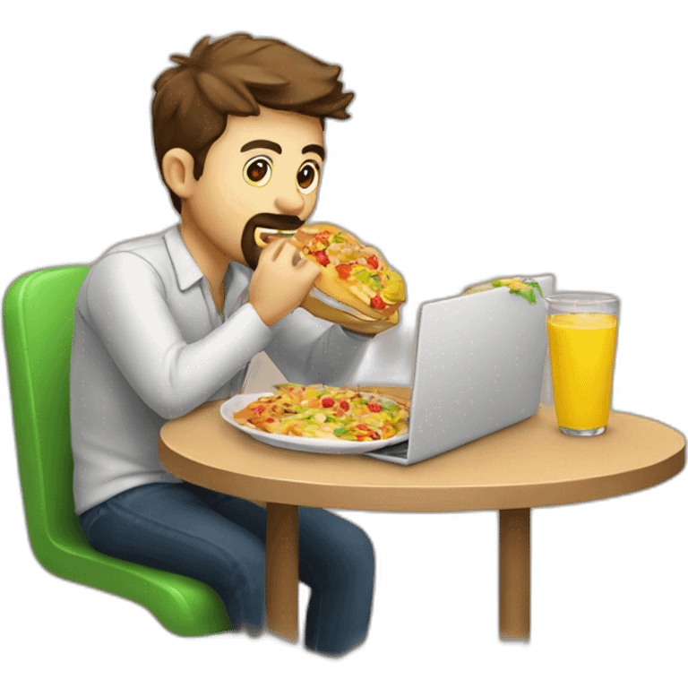

Home

Eat
Food is life.
Fueling my body with good food is essential to stay energized and focused. Whether it’s a quick snack or a healthy meal, I believe the right nourishment keeps my creativity flowing and my mind sharp. 🍕🥗

Code
Coding is my passion.
It’s what drives me to constantly improve and learn new things. From building websites and applications to solving problems, I spend a significant portion of my day writing clean, efficient code. I thrive in the world of code. 💻🔧